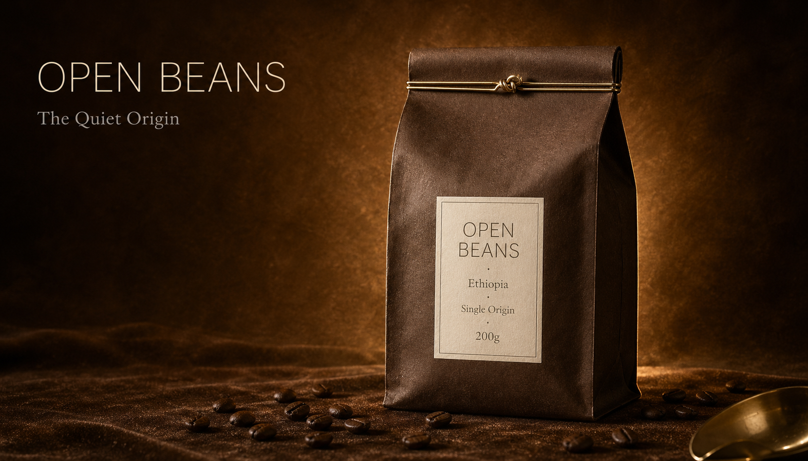

返回課程首頁
(B3)
影棚高質感氛圍 hero
廣告級單品 hero 圖。深色或同色基調背景、戲劇化主光、最少道具、商品為唯一敘事中心。目的不是「規格清楚」、是「讓商品看起來貴」——品牌官網首屏、雜誌整版廣告、發布主視覺、平面投放最高頻的視覺語彙。
這張卡片你會學到
能判斷何時用影棚 hero（與 B1 白底電商、B2 生活方式、B5 UI 疊加的差異）
能拆解模板的 6 段 prompt 結構並調出戲劇光與絲絨背景的廣告級質感
能識別 4 種常見踩雷（光線太平／道具偷溜／色調混亂／文案搶戲）並修正
(01)
適用場景
這個模板用在哪
商品居畫面中心或黃金分割位、深色或同色基調背景、戲劇化主光（45° 頂光、邊緣 rim light）、道具克制（≤ 2 個）。目的是「讓商品看起來貴」——把品牌格調拉到雜誌整版廣告的水準。比 B2 生活方式更克制無情境，比 B1 白底有戲劇張力。
四個典型用途：
- 品牌官網首屏 hero（首屏不放純產品、要傳達「品牌格調」時用這個）
- 雜誌整版廣告／報紙跨頁（《La Vie》、《Shopping Design》、《GQ》風格）
- 新品發布主視覺（社群、EDM、實體展板共用一張、要鎮場）
- 平面投放主圖（捷運廣告、誠品櫥窗、百貨內部 POP）
| 對比項 | 本卡片 · B3 影棚 hero | 近似模板 |
|---|---|---|
| 背景 | 深色或同色基調、絲絨／漸變紋理 | B1 白底：純白；B2 生活方式：真實場景；B5：純白 + UI 卡 |
| 光線 | 戲劇主光 + rim light，方向性強 | B1：正面柔光無方向；B2：自然側光柔和 |
| 道具 | ≤ 2 個、嚴格同色系 | B1：嚴禁任何；B2：3-5 個生活道具 |
| 人物 | 嚴禁（連手都不行） | B2：可有局部；B1：嚴禁 |
| 文案疊加 | 常疊（品牌名 + 短標語） | B1：選用；B2：不疊；B5：必疊 |
| 產出難度 | 最高（戲劇光與色調最考驗 prompt） | B1：最易；B2：中等 |
一句話判斷：客戶問「能上架嗎」走 B1；問「能放 IG 嗎」走 B2；問「能放官網 hero、想看起來貴」走本卡 B3；問「banner 上要加大字」走 B5。B3 最考驗 prompt 工夫、但成品最有視覺亮點，適合進階學員與接案熟手。
(02)
模板拆解｜6 段 prompt 結構
原模板把一張影棚 hero 圖拆成 6 段。**核心難度在 lighting 段**——key + fill + rim 三道光必須各自指定方向、色溫、強度，AI 才不會給你一張「平光無戲劇感」的庸照：
| 段 | 段落 | 必問還是可預設 | 填什麼 |
|---|---|---|---|
| 1 | subject 商品 | 必問 | 商品名 + 視覺特徵 + 位置（黃金分割點、中心略偏右）+ 占畫面 35-50%（比 B1 少、留氛圍空間） |
| 2 | background 背景 | 必問 | 深色／同色基調（深棕絲絨／黑色平面／深空灰漸變）+ 紋理（絲絨／拉絲金屬／煙霧）+ 色板（暖棕+金 / 黑+金 / 灰+冷藍） |
| 3 | lighting 光線 | 必問（最關鍵） | 三道光必寫：key light（45° 頂光戲劇主光）+ fill light（弱柔光填暗部）+ rim light（背後邊緣光勾輪廓） |
| 4 | props 道具 | 選用 | ≤ 2 個、嚴格同色系（深棕主視覺就配深棕道具）；不寫的話 AI 通常會自動克制 |
| 5 | text_overlay 文案 | 常疊 | 品牌名（無襯線細體、米白／淺金）+ 短標語（≤ 8 字、襯線細體、淺灰）。英文優先避免中文字體覆轍。位置：左上或右下留白處 |
| 6 | 限制 | 固定寫死 | 禁忌：人物或人體局部、道具喧賓奪主、字體超過兩種、冷暖色混搭、lifestyle 元素 |
記憶口訣：商品 → 暗背景 → 三道光 → 道具 → 文案 → 禁。三道光的順序不能省：主光（讓商品被看見）→ 補光（讓暗部不死黑）→ rim（讓商品脫離背景）。少寫一道、戲劇感就出不來。
(03)
台灣化範例 ①｜小工作室視角
小工作室 · 接客戶案
OPEN BEANS 咖啡品牌官網 hero · 雙月主視覺輪換
- 1 商品｜200g OPEN BEANS 咖啡豆袋（同 B1 商品、同個品牌系列）、位置畫面中心略偏右、占畫面 40-45%
- 2 背景｜深棕色絲絨布料配同色調暈染、輕微纖維紋理、暗到稍亮的細微漸變
- 3 光線｜頂部 45° 戲劇主光 + 右側弱柔光補光 + 背後金色 rim light 勾輪廓
- 4 道具｜散落幾顆深棕咖啡豆 + 局部黃銅咖啡量匙反射（不完整入鏡）
- 5 文字疊加｜畫面左側上半留白：上方「OPEN BEANS」（英文無襯線細體大字、米白）+ 下方「The Quiet Origin」短標語（英文襯線細體、淺灰）
- 6 限制｜禁人物或人體局部、禁道具搶戲、禁字體超過兩種、禁混冷暖色
為什麼這個情境成立：6 張主視覺 = 同 prompt 結構、只動「產地 + 標語」（衣索比亞 The Quiet Origin → 瓜地馬拉 Highland Whisper → 肯亞 Acid & Sun ⋯⋯）= 6 張一致質感的官網 hero 一個下午搞定。NT$8000 接案的成本可控制在 2 小時內、利潤率 75% 以上，且客戶可以重複委託（每年改版）。
(04)
台灣化範例 ②｜個人接案視角
個人接案 · 進階商攝顧問
幫文青香水品牌做誠品櫥窗 + 新品發表會主視覺
- 1 商品｜100ml 厚重玻璃香水瓶、琥珀色玻璃、金屬黑色噴霧頭、瓶身正面印有極簡無襯線英文品牌「NUIT NOIR」、位置畫面中心略偏左、占畫面 38%
- 2 背景｜深黑色絲絨布料配局部金色光暈、輕微絲絨紋理、極簡平面
- 3 光線｜頂部射燈戲劇主光 + 玻璃瓶背後金色 rim light 強調瓶身輪廓 + 微弱底部反射
- 4 道具｜≤ 1 個：瓶身右下散落幾片乾燥黑玫瑰花瓣（與品牌名 NUIT NOIR「黑夜」呼應）
- 5 文字疊加｜畫面右上：品牌名「NUIT NOIR」（無襯線細體、淺金）+ 標語「Night, Another Light」（襯線細體、淺灰）。位置避開瓶身。
- 6 限制｜禁人物、禁手持、禁多花、禁明亮色彩、禁讓玫瑰花瓣搶過瓶身
接案實務 tip：B3 接案能跳到 NT$10000 以上，是因為「廣告級質感」的客戶決策層級不同——不是賣家、是品牌主。客戶看的不是「秒看清規格」、是「能不能撐起品牌格調」，所以 prompt 工夫直接反映在報價。三道光是入場券、色板統一是專業度、文案克制是品味。中文品牌名仍走 後製疊字流程。
(05)
示範圖｜可複製、可重現
下面這張圖是用範例 ① 的 6 段（OPEN BEANS · Ethiopia 廣告級 hero）實際跑出來的成品。AI 生圖 75 秒一發到位、戲劇主光 + rim light 到位、左上「OPEN BEANS / The Quiet Origin」文案排版精準、深棕絲絨背景紋理清楚。下方就是完整的 prompt——點「複製 prompt」、貼到 ChatGPT 或 Gemini，把【商品】段的「Ethiopia」與【文字疊加】的標語換掉，就是 6 張一致氛圍的官網 hero：

完整 prompt · OPEN BEANS 影棚廣告級 hero
請生成一張高級影棚商業產品圖（premium studio commercial photograph），可作為品牌官網首屏 hero 或雜誌整版廣告使用： 【商品】一袋 200g 牛皮紙咖啡豆袋（OPEN BEANS 品牌系列），深棕色牛皮紙袋身搭配米白色長方形標籤紙，標籤英文「OPEN BEANS · Ethiopia · Single Origin · 200g」清楚可讀。豆袋頂部金屬鐵絲封口、可見扭結。位置：畫面中心略偏右，占畫面 40-45%。 【背景】深棕色絲絨紋理布料配同色調暈染環境，輕微絲絨纖維紋理感，色調統一暖棕加金。背景由暗到稍亮的細微漸變，營造空間深度。 【光線】頂部 45 度戲劇主光、造型清晰，照亮豆袋正面與標籤；右側弱柔光補光填暗部；背後金色邊緣光（rim light），勾勒豆袋整體輪廓。整體氛圍：溫暖、奢華、近黃昏感。 【道具（克制、最多 2 個）】散落幾顆深棕色咖啡豆於豆袋前方桌面（與商品同色系）；局部金屬器具（如黃銅咖啡量匙的局部反射、不要完整入鏡）。 【文字疊加】畫面左側上半留白處加入文字：上方品牌名「OPEN BEANS」（英文無襯線細體大字、米白色）+ 下方一句短 tagline「The Quiet Origin」（英文襯線細體小字、淺灰色）。位置不可遮商品、留白足夠。 【風格】頂級商業攝影感、高動態範圍、微顆粒感，視覺像雜誌整版廣告。淺景深、背景輕微虛化、商品為絕對焦點。色板嚴格統一（暖棕＋金＋米白）、不出現額外鮮艷色。 【限制】嚴禁出現人物或人體局部（手、嘴唇、指甲）；嚴禁道具喧賓奪主；嚴禁字體超過兩種；嚴禁背景與商品色過於接近導致看不見輪廓；嚴禁混合冷暖色調；嚴禁出現 lifestyle 元素（餐具、生活道具、戶外景）。 輸出比例：16:9（橫幅 banner 適合官網 hero）。
四個替換重點（同一份 prompt 改四處就變你的品牌氛圍）：
- 【商品】整段換成你的商品（包裝形態、顏色、英文標籤）
- 【背景】換色板：「深棕絲絨」→ 黑色霧面（高奢）／深空灰（科技感）／米白絨布（極簡）
- 【光線】rim light 顏色配品牌色：金（暖棕）／銀（科技）／淺藍（清冷數位）
- 【文字疊加】品牌名 + 標語都換、字體類別維持「無襯線粗 + 襯線細」對比
進階：給 GPT-image-2 / API 用的 JSON 結構版（直接傳給 OpenAI /images/generations）
{
"type": "高級影棚商業產品圖",
"goal": "生成一張可直接當品牌官網 hero 或雜誌整版廣告的影棚視覺，商品為唯一敘事中心、氛圍統一、色板克制",
"subject": {
"product_name": "200g OPEN BEANS 咖啡豆袋",
"visual_description": "深棕牛皮紙袋身、米白標籤、英文「OPEN BEANS · Ethiopia · Single Origin · 200g」、頂部金屬鐵絲封口",
"position": "畫面中心略偏右",
"scale": "占畫面 42%"
},
"background": {
"type": "深棕色絲絨紋理布料 + 同色調暈染環境",
"texture": "絲絨細微纖維紋理",
"color_tone": "暖棕 + 金"
},
"lighting": {
"key_light": "頂部 45° 戲劇主光，造型清晰",
"fill_light": "右側弱柔光",
"rim_light": "背後金色邊緣光，勾勒輪廓",
"mood": "溫暖、奢華、近黃昏感"
},
"props": {
"enabled": true,
"items": ["散落深棕咖啡豆", "局部黃銅量匙反射"],
"rule": "≤ 2 個、嚴格同色系"
},
"text_overlay": {
"enabled": true,
"brand": "OPEN BEANS",
"headline": "The Quiet Origin",
"position": "畫面左側上半留白",
"fonts": "無襯線細體（品牌）+ 襯線細體（tagline）"
},
"style": {
"rendering": "頂級商業攝影 + 高動態範圍 + 微顆粒",
"depth": "淺景深、背景虛化",
"consistency": "色板嚴格統一（暖棕 + 金 + 米白）"
},
"constraints": {
"must_keep": ["商品絕對主角", "光線方向統一", "色調統一", "文案不遮商品"],
"avoid": ["人物或人體局部", "道具喧賓奪主", "字體超過兩種", "冷暖色混搭", "lifestyle 元素"]
},
"output": {"aspect_ratio": "16:9"}
}
讀圖時看這 4 個點：(1) 三道光是不是都到位（主光戲劇感／補光不死黑／rim 勾輪廓）？(2) 色板有沒有混入額外鮮艷色？(3) 道具是不是 ≤ 2 個且同色系？(4) 文案有沒有遮到商品？這 4 點過了、就是廣告級 hero。
(06)
改成你的場景
把上面 6 段拿來，只動 3 個替換槽，就變成你自己的 prompt：
| 替換槽 | 你的版本 |
|---|---|
| ⓐ 背景色板＝？（深暖／深冷／黑奢／米白） | 例：深棕絲絨（暖品牌）／黑色霧面（高奢）／深空灰漸變（科技） |
| ⓑ 三道光各自方向＝？ | 例：主光頂 45°／補光右弱柔／rim 背後金光勾輪廓 |
| ⓒ 文案＝？（品牌名 + ≤ 8 字標語、英文優先） | 例：「NUIT NOIR」+「Night, Another Light」 |
最常見的 4 種踩雷：
- 光線太平、戲劇感出不來 只寫「柔光」「均勻打光」AI 給你的會是 B1 白底感、不是 B3 戲劇感。解法：三道光必寫——key（45° 戲劇主光）+ fill（弱柔光填暗部）+ rim（背後邊緣光勾輪廓）。少寫一道、戲劇感就出不來。
- 道具偷溜進來、搶過商品 寫了「克制道具」AI 還是給你 4-5 個花瓣 / 葉片。解法：限制段明確「props ≤ 2、嚴格同色系」，並在道具段個別命名（散落咖啡豆、黃銅量匙反射）；不要寫「適度道具」這種模糊指令。
- 色板混亂 prompt 寫了「暖棕」但 AI 給你某處鮮藍色點綴。解法：明確寫「色板嚴格統一（暖棕＋金＋米白）、不出現額外鮮艷色」、並在限制加「禁混冷暖色」一條鎖。
- 中文 logo 字體別指望 prompt 解決 跟 B1／B2 同一個限制——AI 生圖工具對中文字體只會給「系統預設襯線體」。
B3 的最佳策略：品牌名 + 標語都寫英文（如本卡示範圖的「OPEN BEANS / The Quiet Origin」）。如果客戶是台灣本地品牌堅持中文（譬如「夜，是另一種光」），把【文字疊加】整段拿掉、AI 生圖 只生純圖、再用 後製字體疊圖工作流附錄 在 Figma／Canva 疊上中文 logo 與標語。
實戰提醒：B3 廣告級 hero 客戶往往對「字體」更挑剔——他們是品牌主、看慣高級雜誌、一眼就能看出新細明體系跟金萱體的差。所以 B3 後製字體的需求比 B1／B2 更強烈，不要嘗試一次到位、預設「prompt 出純圖 → 後製疊字」是 B3 標準流程。
失敗案例｜prompt 動了哪一處會壞掉：
- 把 lighting.rim_light 整段刪掉 → 商品輪廓融進深背景、戲劇感全失
- 把 background.color_tone 改成「鮮亮綠」+ 商品仍是暖棕 → 冷暖色混搭、整體掉檔次
- 把 props.items 從 2 個加到 4 個 → 雜誌風變成 lifestyle 拼盤、廣告感消失
- 把 text_overlay.brand 改成「開放豆」中文 → 字體變新細明體系、配不上深棕絲絨、客戶會皺眉
- 把 style.depth 從「淺景深、背景虛化」改成「全景深」 → 失去焦點層次、變成圖庫照
- 把 限制.avoid 移除「lifestyle 元素」 → AI 自動加進手、咖啡杯、餐具、就變回 B2 生活方式圖了
交付提醒 本卡片的 AI 生成的示範圖不是可直接給客戶的最終交付品。中文商業案一律先用 AI 生出構圖（含英文佔位文字）、再走 後製字體疊圖工作流 在 Figma／Canva 疊上中文、最後校稿確認才交付給客戶。
本卡片改寫自 ConardLi／garden-skills 之
premium-studio-product.md 模板（MIT License、2026），已對中文進行台灣用語在地化、加入兩個本地接案情境（OPEN BEANS 咖啡品牌官網 hero 雙月主視覺輪換／文青香水品牌誠品櫥窗 + 新品發表會主視覺）與失敗案例，原始 JSON prompt 結構保留為教學參考。